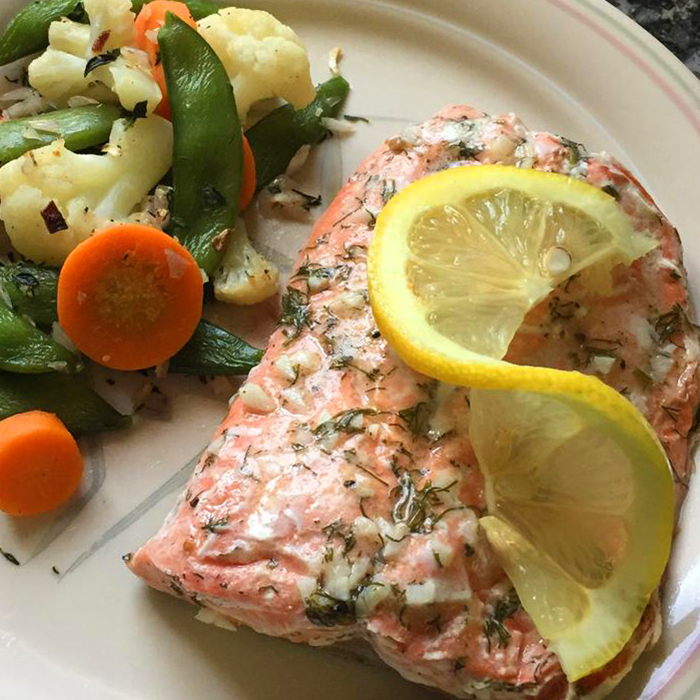

Odin Recipes

Salmon with Lemon and Dill
This is a wonderful (and easy) recipe I got from my Aunt. The flavors of lemon and dill really complement the fish. I like to use wild Alaskan salmon for this recipe, but any salmon will work. I usually don't measure, so these are all estimates. Play with the ingredients to suit your own tastes!
Salmon with Lemon and Dill
Ingredients
- 1 pound salmon fillets
- 1/4 cup butter,melted
- 5 tablespoons lemon juice
- 1 tablespoons dried dill weed
- 1/4 teaspoon garlic powder
- sea salt to taste
- freshly ground black pepper to taste
Directions
- Preheat oven to 350 degrees F (175 degrees C). Lightly grease a medium baking dish.
- Place salmon in the baking dish. Mix the butter and lemon juice in a small bowl, and drizzle over the salmon. Season with dill, garlic powder, sea salt, and pepper.
- Bake 25 minutes in the preheated oven, or until salmon is easily flaked with a fork.
Nutrition Facts
Per Serving: 320 calories; protein 25.7g; carbohydrates 2.4g; fat 22.1g; cholesterol 104.3mg; sodium 196.6mg. Full Nutrition